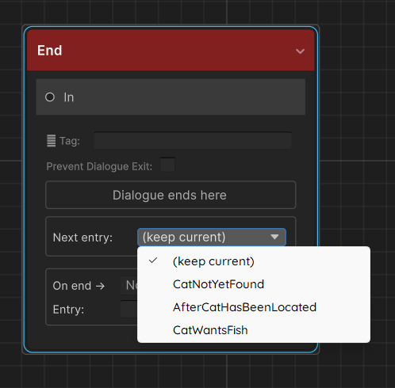

Entry Points
Entry points let you jump to any node in a graph instead of always starting from the default start node. They are the primary mechanism for branching narrative across multiple conversations — an NPC who says different things before and after a quest, a cutscene that can start from different beats, a shop NPC with a special line once you've been friends for a while.
Concepts
| Term | Meaning |
|---|---|
| Start node | Every graph has one — the node with the Start badge. This is the default entry. |
| Entry point | A named alias that maps a key string to a specific node GUID. Stored on the graph asset. |
| Active entry point key | A string held per-actor at runtime. When dialogue starts, this key is resolved to a node. Empty/null = use start node. |
| Auto-switching | End nodes have a Next entry dropdown — selecting a key automatically updates the actor's active entry point when that end node is reached. |
Creating an entry point
Step 1 — Mark a node
Right-click any node in the graph editor canvas → Set as Entry Point.
A text field appears in the popup. Type a short, descriptive key — e.g. QuestDone, Repeat, PostBattle. The key is case-sensitive everywhere.
The node gets a yellow ⚑ badge in the top-right corner. The key label is also displayed on the badge so you can see at a glance which entry points exist in the graph.
Step 2 — Verify in the graph editor
The Inspector shows a summary count of entry points on the graph asset but not the individual keys. To verify, open the graph in the editor and look for the yellow ⚑ badges on nodes — each badge displays the key assigned to that node. If a node you intended to mark as an entry point has no badge, right-click it and set it again.
Step 3 — Use the key
Leave the Active Entry Point Key field on DialogueTrigger or NPCDialogue empty to use the start node. Type any of your defined keys to start there instead. This field is directly editable and saved in the scene — useful for authoring a component that always starts partway through a graph (e.g. a tutorial skip).
How the runner resolves an entry point
DialogueGraph.ResolveEntryPointGuid(key) is called at the start of every dialogue:
public string ResolveEntryPointGuid(string key)
{
if (!string.IsNullOrEmpty(key))
{
foreach (var ep in EntryPoints)
{
if (ep.Key == key)
return ep.NodeGuid;
}
Debug.LogWarning($"[DialogueGraph] Entry point key '{key}' not found in '{name}'. " +
"Falling back to start node.");
}
return StartNodeGuid;
}
Key points:
- If key is null or empty, start node is used (no warning)
- If key is non-empty but not found in the EntryPoints list, a warning is printed and the start node is used — it does not throw
- Entry point lookup is a simple linear scan — keep count small; performance only matters for very large graphs with many entry points
Runtime API
Both DialogueTrigger and NPCDialogue implement IDialogueActor:
public interface IDialogueActor
{
DialogueGraph Graph { get; }
string ActiveEntryPointKey { get; }
void SetEntryPoint(string key); // switch to named branch
void ResetEntryPoint(); // revert to default start node (sets key to null)
void StartDialogue(); // begin dialogue from current entry point key
}
From any script:
// Get the component — works whether it's a DialogueTrigger or NPCDialogue
IDialogueActor actor = npcObject.GetComponent<IDialogueActor>();
// Change the branch
actor.SetEntryPoint("QuestDone");
// Start immediately
actor.StartDialogue();
// Or just set it and let the player trigger it naturally
actor.SetEntryPoint("RepeatBranch");
Using IDialogueActor rather than the concrete type means your quest system, save system, and cutscene scripts don't need to know whether the NPC uses DialogueTrigger or NPCDialogue — the interface is the same.
SetEntryPoint(string key)
Sets the actor's ActiveEntryPointKey to key. The change takes effect the next time StartDialogue() is called — it does not interrupt an in-progress dialogue.
ResetEntryPoint()
Sets ActiveEntryPointKey to null. The next dialogue start will use the graph's default start node.
ActiveEntryPointKey
Read-only property. Reflects the current key. Always check this when saving (see Saving).
Directly via DialogueManager
You can also call StartDialogue directly on the manager without going through the actor:
DialogueManager.Instance.StartDialogue(graph, "QuestDone", actorComponent);
This does not update the actor's ActiveEntryPointKey — it just runs from that key for this one call. If you want the key to persist for next time, call actor.SetEntryPoint("QuestDone") first.
Auto-switching with End nodes
Every End Node has a Next entry dropdown. When dialogue reaches this end node, the runner automatically calls actor.SetEntryPoint(key) with the selected key.

// DialogueRunner.cs (simplified)
if (!string.IsNullOrEmpty(endNode.SetEntryPointOnComplete))
actor?.SetEntryPoint(endNode.SetEntryPointOnComplete);
Example pattern — quest-aware NPC
Suppose an NPC has three phases:
| When | Key | Branch content |
|---|---|---|
| First meeting | (empty, start node) | Introductory dialogue |
| Quest in progress | InProgress |
Brief reminder |
| Quest complete | QuestDone |
Reward dialogue + closure |
Graph setup:
- Start node → introductory conversation → End node with Next entry = InProgress
InProgressentry point → reminder branch → End node with Next entry = InProgress (stays in "in progress" branch until something changes it)QuestDoneentry point → reward branch → End node (leave Next entry as (keep current) — quest is done, no further switching needed)
Your quest system changes the actor:
void OnQuestCompleted()
{
IDialogueActor npc = questNpc.GetComponent<IDialogueActor>();
npc.SetEntryPoint("QuestDone");
}
The NPC now runs QuestDone on the player's next interaction, regardless of whether they spoke to him before or after completing the quest.
DialogueTrigger-specific fields
DialogueTrigger has an Active Entry Point Key field directly in the Inspector. This is a serialized field — you can set it at design time for NPCs that always start partway through a graph without any C# code.
At runtime, TriggerDialogue() always passes activeEntryPointKey to DialogueManager.StartDialogue. If DialogueManager is missing or graph is null, an error is logged and nothing happens.
Interaction flow with a trigger collider:
- Player enters trigger zone →
playerInRange = true, interact prompt shown (if assigned) - Player presses
InteractKey(orStart On Enter = true) →TriggerDialogue()is called TriggerDialoguecallsDialogueManager.Instance.StartDialogue(graph, activeEntryPointKey, this)- Dialogue runs from the resolved node
Saving and restoring the active entry point
The ActiveEntryPointKey is a plain string at runtime — not automatically persisted. Save and restore it with your existing save system:
// --- Saving ---
string savedKey = npc.GetComponent<IDialogueActor>().ActiveEntryPointKey;
// Write savedKey to PlayerPrefs, JSON, etc.
// --- Loading ---
string savedKey = /* load from your save system */;
npc.GetComponent<IDialogueActor>().SetEntryPoint(savedKey); // null or "" restores the default
For a convenient wrapper, implement save/load directly on the actor:
public class NPCDialogueWithSave : NPCDialogue
{
public string SaveKey => $"ep_{gameObject.name}";
public void Save() =>
PlayerPrefs.SetString(SaveKey, ActiveEntryPointKey ?? "");
public void Load() =>
SetEntryPoint(PlayerPrefs.GetString(SaveKey, ""));
}
See Saving for a full discussion including variables and choice history.
Multiple entry points on the same graph
There is no limit to the number of entry points on a graph. Complex NPCs might have ten or more:
Start — first meeting
AfterBanquet — next morning after the banquet scene
QuestActive — while quest is running
QuestDone — after quest is complete
Hostile — if player attacked a villager
Friend — high affinity branch
Use the yellow badges and the Entry Points list on the graph asset to keep track of them. Group related branches with Comment Boxes in the editor so the canvas doesn't become confusing.
Edge cases
Entry point on a Jump Node
You can set an entry point on a Jump Node. Execution will immediately jump to the tagged node — it will never display any content at the entry point node itself. This can be used as an indirection layer:
Entry "Retry" → Jump Node [tag: FirstLine]
→ First NPC Node
Entry point on an End Node
Technically valid. Dialogue will end immediately on starting. Rarely useful, but it won't crash — the runner sees the end node and calls HandleEnd.
Changing the entry point mid-dialogue
Calling actor.SetEntryPoint(key) while a dialogue is running is safe (it's just a string assignment) but the current dialogue is not affected. The key only takes effect on the next StartDialogue call. If you need to jump within a running dialogue, use a Jump Node connected by the graph.
Entry point not found — warning, not error
If you call SetEntryPoint("Typo") and "Typo" doesn't exist in the graph, ResolveEntryPointGuid logs a warning and falls back to the start node. Check the Console for these warnings during QA — they signal a graph/code mismatch.